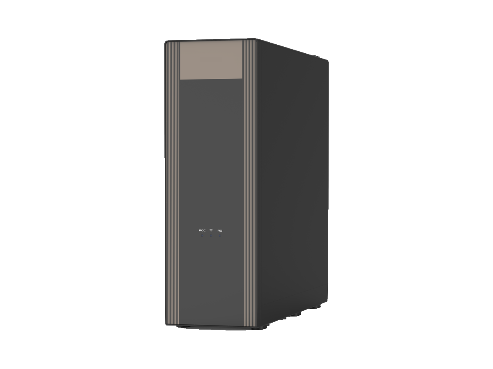

卓上型
卓上型RP-C07
加熱ジャグ付きRO浄水器
SKU: RP-C07
MOQ：お問い合わせ時に確認

卓上型システム
炭酸水シリーズ（W61）— 8バリアント。RP-C14（W61）がシリーズを牽引。
RP-C14、RP-C05、W62仕上げは炭酸水シリーズの8バリアントのうち3つです。シリーズにはW64仕上げ（RP-C14（W61）と同じモデルで、パネル仕上げのみ異なります）と、さらに4つのバブルバリアント（W65、W68、W69、D1）もあり、仕様は注文ごとに確認します。
写真の3バリアントは以下の仕様値を共有し、ディスプレイとフロントパネルのみが異なります。RP-C14（W61）は小型LEDタッチスクリーンとダークグレーのストライプパネル、RP-C05（W60）は7インチフルカラータッチスクリーンとダークブラッシュメタルパネル、RP-C14（W62）はRP-C14（W61）と同じモデルでブラックゴールドの縦ストライプパネルです。
仕様はモデルと注文ごとに確認します。
以下の確認済み仕様はRP-C14、RP-C05、W62バリアント、W64仕上げに適用。
8バリアント — 次のようにもお見積もりくださいRP-C05（炭酸、タッチスクリーン）.
電圧／周波数は対象国に合わせて設定可能です。その他の構成は注文ごとに確認します。
RP-C14はRO浄化と炭酸水を1台に組み合わせた卓上炭酸水シリーズです。写真の4バリアントは同じコア仕様を共有し、ディスプレイとフロントパネルのみが異なります。そのため、ブランドは内部の機械を変えずにラインに合った外観を選べます。写真のバリアントは浄水流量520 mL/min、定格浄水量4000 Lを共有し、シリーズは4 °Cの氷水と温水も提供します。シリーズに8バリアントあり、ブランドオーナーに1つのプラットフォームから完全な炭酸水ラインナップを提供します。
最小注文数量はいくつですか？
初回注文はモデルあたり200台、再注文は500台です。
大口注文の前にサンプルを注文できますか？
はい。サンプルは15日でご用意できます。サンプル費用は初回大口注文時に返金されます。大口注文はサンプル承認後40日で出荷し、FOB深圳条件となります。
バリアントで性能は異なりますか？
いいえ。図示の4バリアントは同じ仕様値を持ち、ディスプレイとフロントパネルのみ異なります；他の4つのバブルバリアントは注文ごとに確認します。
バリアント画像にホバーすると仕様が表示されます。タッチ画面では画像をタップしてください。


各バリアントの全仕様を並べて表示。下の仕様表に同じ値を示す。
| 仕様 | RP-C14-1 — 炭酸水（W61） | RP-C14-2 — 炭酸水（W60） | RP-C14-3 — 炭酸水、ブラックゴールド仕上げ（W62） | RP-C14-4 — 炭酸水（W64） | RP-C14-5 — 炭酸水（W65） | RP-C14-6 — 炭酸水（W68） | RP-C14-7 — 炭酸水（W69） | RP-C14-8 — 炭酸水（D1） |
|---|---|---|---|---|---|---|---|---|
| ディスプレイ | 小型LEDタッチスクリーン | 7インチフルカラータッチスクリーン | 小型LEDタッチスクリーン | 小型LEDタッチスクリーン | ご注文ごとに確認いたします | ご注文ごとに確認いたします | ご注文ごとに確認いたします | ご注文ごとに確認いたします |
| フロントパネル | ダークグレーストライプパネル | ダークブラッシュメタルパネル | ブラック・ゴールド縦ストライプパネル | パネル仕上げはご注文ごとに確認します | ご注文ごとに確認いたします | ご注文ごとに確認いたします | ご注文ごとに確認いたします | ご注文ごとに確認いたします |
| 浄水流量 | 520 mL/min | 520 mL/min | 520 mL/min | 520 mL/min | ご注文ごとに確認いたします | ご注文ごとに確認いたします | ご注文ごとに確認いたします | ご注文ごとに確認いたします |
| 定格浄水量 | 4000 L | 4000 L | 4000 L | 4000 L | ご注文ごとに確認いたします | ご注文ごとに確認いたします | ご注文ごとに確認いたします | ご注文ごとに確認いたします |
| ろ過 | PAC + RO + CF | PAC + RO + CF | PAC + RO + CF | PAC + RO + CF | RO（シリーズ機能） | RO（シリーズ機能） | RO（シリーズ機能） | RO（シリーズ機能） |
| 冷却 | コンプレッサー；3.0 L/h | コンプレッサー；3.0 L/h | コンプレッサー；3.0 L/h | コンプレッサー；3.0 L/h | コンプレッサー；4°C冷水（シリーズ機能） | コンプレッサー；4°C冷水（シリーズ機能） | コンプレッサー；4°C冷水（シリーズ機能） | コンプレッサー；4°C冷水（シリーズ機能） |
| 加熱能力 | 18 L/h | 18 L/h | 18 L/h | 18 L/h | 3秒瞬間加熱（シリーズ機能） | 3秒瞬間加熱（シリーズ機能） | 3秒瞬間加熱（シリーズ機能） | 3秒瞬間加熱（シリーズ機能） |
| 加熱出力 | 2270 W | 2270 W | 2270 W | 2270 W | ご注文ごとに確認いたします | ご注文ごとに確認いたします | ご注文ごとに確認いたします | ご注文ごとに確認いたします |
| ナノバブル水 | 800 mL | 800 mL | 800 mL | 800 mL | SUPERMIX気液混合（シリーズ機能） | SUPERMIX気液混合（シリーズ機能） | SUPERMIX気液混合（シリーズ機能） | SUPERMIX気液混合（シリーズ機能） |
| 寸法 | 467 × 220 × 430 mm | 467 × 220 × 430 mm | 467 × 220 × 430 mm | 467 × 220 × 430 mm | ご注文ごとに確認いたします | ご注文ごとに確認いたします | ご注文ごとに確認いたします | ご注文ごとに確認いたします |
| 電圧／周波数 | 対象国に合わせて設定可能 | 対象国に合わせて設定可能 | 対象国に合わせて設定可能 | 対象国に合わせて設定可能 | 対象国に合わせて設定可能 | 対象国に合わせて設定可能 | 対象国に合わせて設定可能 | 対象国に合わせて設定可能 |
W62仕上げはRP-C14のカラーオプション — RP-C14（W61）と同じモデル・仕様で、パネル仕上げのみ異なります。
W64仕上げはRP-C14（W61）と同じモデルで、パネル仕上げのみ異なり、上記のRP-C14（W61）仕様値を共有します。W65、W68、W69、D1バブルバリアントはシリーズ概要に示すシリーズの特徴（SUPERMIX気液混合、ROろ過、4 °C氷水のコンプレッサー冷却、UVC殺菌、3秒瞬間加熱、大容量水タンク）を共有します；これら4バリアントの他のすべての値は注文ごとに確認します。W65、W68、W69、D1、W64の製品写真はまだ公開されていません — シリーズ概要は個別モデルにラベルを付けずに範囲を示します。
W61製品ビデオ。
W60製品ビデオ。
ROPureOEMカタログの仕様9行 — これらの数値はRP-C14、RP-C05、W62バリアント、W64仕上げに適用。
| 浄水流量 | 520 mL/min |
|---|---|
| 定格浄水量 | 4000 L |
| ろ過 | PAC + RO + CF |
| 冷却 | コンプレッサー；3.0 L/h |
| 加熱能力 | 18 L/h |
| 加熱出力 | 2270 W |
| ナノバブル水 | 800 mL |
| 寸法 | 467 × 220 × 430 mm |
| 電圧／周波数 | 対象国に合わせて設定可能 |
仕様はROPureOEMカタログに基づいています。値がまだ確認されていない場合は「注文ごとに確認」と記載しています。未確認の数値は公表しません。